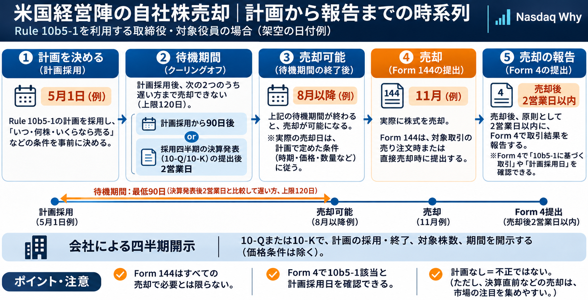

株の豆知識
社長の「自社株売り」は、いつ決めて、いつ売るのか？――報告書でわかる5つの日付
米国では、経営陣が自分の会社の株を売り買いすると、必ず報告が出ます。ニュースで「CEOが株を売った」と聞くと驚きますが、多くの売りは何か月も前に決めた計画どおりのものです。売りを決めてから報告が出るまでの流れと、報告書から読み取れる5つの日付を、順番に見ていきます。

経営陣の売買は、すべて報告される
米国の上場企業の経営陣（役員・取締役）と、株の10%以上を持つ大株主は、自社の株を売り買いすると、SEC（米国の証券の監督機関）に「Form 4」という報告を出します。期限は、売買した日から2営業日以内です。
この報告は誰でも無料で見られます。ニュースの「CEOが株を売った」は、ほとんどがこの報告をもとにしています。
① 前もって決める「計画売り」（10b5-1）
経営陣は、会社のまだ発表されていない情報を知っています。その立場で株を売り買いすると、インサイダー取引を疑われかねません。
そこで使われるのが「10b5-1」という計画です。「いつ・何株・いくらなら売る（買う）」を前もって決めておき、あとは決めたとおりに売り買いします。決めたときに内部の情報を知らず、誠実に計画を守っていれば、その後の売買は「計画どおりのもの」と説明しやすくなります。
② 決めてから、しばらくは売れない
2023年からは、計画を決めてから実際に売り買いを始めるまで、待つ期間（クーリングオフ）が決められています。経営陣の場合は、次の2つのうち遅いほうまで待ちます。ただし最長で120日です。
1つ目は、計画を決めてから90日後。2つ目は、計画を決めた四半期の決算の数字を、会社が10-Q・10-K（四半期・年間の報告書）で出してから2営業日後です。役員以外の人は30日です。つまり、計画で売られた株は、少なくとも3か月ほど前に決めたものです。
③ 売る予定の届け出（Form 144）
経営陣のように会社に近い人（関係者）が、Rule 144 というルールの対象になる株を売るときは、売り注文を出すとき、または直接売るときに「Form 144」で売る予定を届け出ます。ただし、すべての売りで必要なわけではなく、3か月の間に5,000株、または5万ドルをこえて売るときなど、提出の条件を満たす売りが対象です。
届け出は、すぐに売るつもりで出すものとされています。買うときには、このような事前の届け出はありません。
④ 売る、⑤ 報告する
計画で決めた条件になると売られ、2営業日以内にForm 4で報告されます。報告には、売った日、株数、値段に加えて、10b5-1の計画による売り買いかどうかのチェック欄と、計画を決めた日の記載が求められています。
大事なのは、「売れるようになった日」と「実際に売った日」は違うことです。たとえば5月に計画を決め、8月に売れるようになっても、計画の条件（時期・値段・株数）に従って11月に売ることもあります。
会社のほうも、四半期ごとの報告書（10-Q・10-K）に「誰が、いつ計画を始めた（やめた）か、計画の期間、対象の株数」を書く決まりがあります。売る値段の条件は書かれません。
5つの日付と、わかること
| 日付 | どこでわかる | わかること |
|---|---|---|
| ① 計画を決めた日 | Form 4、会社の10-Q・10-K | いつの時点の判断か |
| ② 売れるようになる日 | ①から計算（90〜120日後） | 売りの始まりの目安 |
| （参考）売れるようになった日と、実際に売った日 | — | 同じとは限らない（8月に売れても11月に売ることがある） |
| ③ 届け出の日 | Form 144（対象の売りだけ） | これから売る予定と株数 |
| ④ 売った日 | Form 4 | そのときの株価・会社の状況 |
| ⑤ 報告の日 | Form 4 | ニュースになる日 |
SEC の決まりの要約です。細かい条件は書類やルールの本文で確かめてください。
買う場合は？
計画で買う場合は、売りと同じく待つ期間があり、買ってから2営業日以内にForm 4で報告します。ただし、売るときの「売る予定の届け出（Form 144）」のような、買う前の届け出はありません。買ったことは、買ったあとの報告（Form 4）で初めてわかります。
経営陣が自分のお金で買うときは、計画ではなく、その場の判断で買うことが多いといわれます。多くの会社では、社内の決まりで、決算発表のあとの決められた期間にしか売り買いできません。
ニュースを見るときのポイント
- 10b5-1の計画による売りか：Form 4 のチェック欄と計画を決めた日でわかる。計画どおりなら、何か月も前の判断。
- 10b5-1の表示がない売り：その時の判断の可能性があり、より注目される。ただし、表示がないからといって「事前の計画が一切なかった」とまでは言えないし、不正というわけでもない（決算の直前などの売りは、市場の注目を集めやすい）。
- Form 4 だけでなく、会社の10-Q・10-K も照らし合わせる：計画を決めた日、対象の株数、期間と、実際に売った日がそろうと、事実がはっきりする。
- めったに出ない「買い」：自分のお金で買う理由は限られるため、注目されやすい。
- NasdaqWhy では、目立つ売り買いがあった週だけ「経営陣の売買ランキング」でお知らせします。
目立つ売り買いがあった週は「経営陣の売買ランキング」でお知らせします。
出典
- SEC：Rule 10b5-1 の改正（ファクトシート）
- Hunton：新しい10b5-1の条件と開示（10-Q・10-K の開示内容）
- Investor.gov：Form 144 とは
- 会社のインサイダー取引の規程の例（Form 4 は2営業日以内・売買できる期間）：NV5 Global